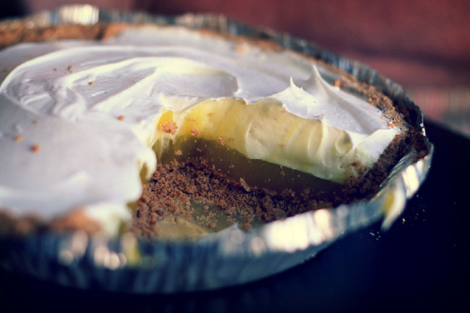
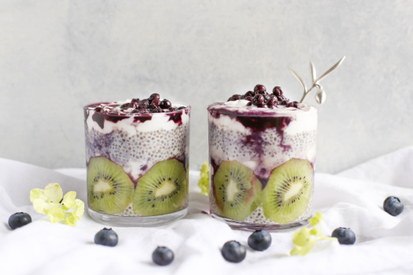
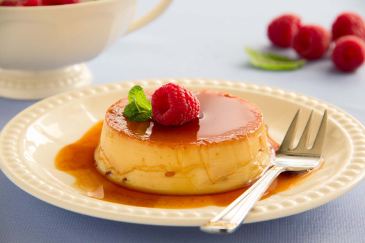

The caramel pudding has a beautiful coat and flavor on the pudding. It's easy to make and you will get nice flavour insteade of egg flavor.You must try it!

Pudding can also be made with different ingredients. like fruits, chocholate, seeds, rice etc. If you want to have different testes in different bites then this is amazing for you.

If you don't have enough time to make pudding still love it then you can try instant jello puddinh.. This is easy to make with jeletin.
